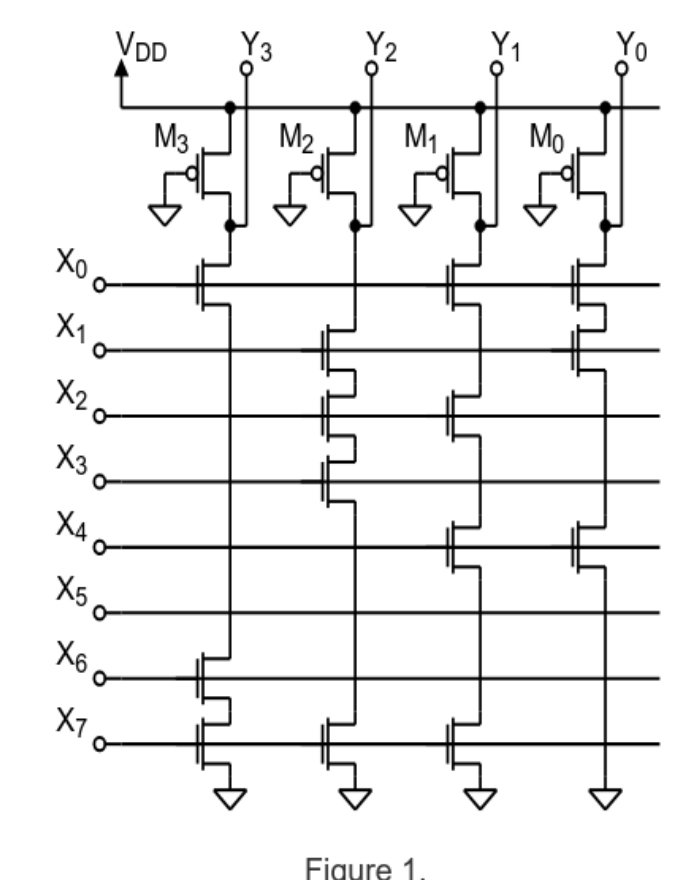

21. Xotira tuzilishi: matritsa, adres dekoderi, wordline kechikishi va ROM
1. Xotira turlari
| Uchuvchan (volatile): tok o'chsa, ma'lumot yo'qoladi | Uchmas (non-volatile): tok o'chsa ham saqlanadi | |
|---|---|---|
| O'qish-yozish | SRAM, DRAM, CAM (22-dars) | EPROM, EEPROM, Flash (22-dars) |
| Faqat o'qish | — | ROM (mask bilan zavodda yoziladi), PROM |
RAM (random access memory) = istalgan adresga istalgan tartibda murojaat qilish mumkin. ROM (read-only memory) = faqat o'qiladi; ichidagi ma'lumot ishlab chiqarishda "qotiriladi" (BIOS, jadvallar uchun).
2. Matritsa: wordline va bitline
Xotira = N ta so'z (word), har biri M bit. Har bir so'zga alohida tanlash simi tortish juda ko'p sim talab qiladi. Shuning uchun katakchalar jadval qilib joylanadi:
- Wordline (WL, so'z simi): gorizontal; katakcha tranzistorlarining gate lariga ulangan, ya'ni "buyruq" beradi: qaysi qator tanlangan.
- Bitline (BL, bit simi): vertikal; katakcha tranzistorining chiqishiga ulangan, ya'ni ma'lumot shu orqali chiqadi yoki kiradi.
- Adres dekoderi: K bitli adresdan 2K ta wordline dan faqat bittasini yoqadi.
- Qator dekoderi + ustun dekoderi: adres ikkiga bo'linadi, shunda jadval "kvadratga" yaqin bo'ladi (juda uzun ingichka jadval sekin ishlaydi).
Misol (slayd): 1 Gbit DRAM = 128 MByte = 227 bayt → 27 adres simi: 14 tasi qator, 11 tasi ustun, 2 tasi 4 ta blokdan birini tanlash.
3. Adres dekoderi
065. An address decoder with 4-bit input requires: a) 4 NAND gates b) 8 NAND gates c) 4 AND gates d) 16 NAND gates
Javob
d) 16 NAND gates. 4 bit → 24 = 16 ta wordline, har biriga bitta 4-kirishli NAND (va kirishlarning inkori uchun 4 ta inverter).
002 / 059. Consider an SRAM (DRAM) with 16 wordlines, each driving 16 cells. … Draw the schematic of the row decoder.
Javob
16 wordline → 4 adres biti A3…A0. Har bir adres biti va uning inkori (4 inverter) 16 ta 4-kirishli NAND ga beriladi; har NAND o'z kombinatsiyasini oladi (masalan WL5 uchun A3', A2, A1', A0). NAND chiqishidan keyin wordline ni haydash uchun odatda inverter qo'yiladi (rasmiy izoh: "typically there is an inverter on the output, to drive the word line").
4. Wordline ni yoqish vaqti (kechikish)
Oxirgi bosqich (inverter) wordline ni zaryadlaydi. Yuklama = shu qatordagi hamma katakchalar tranzistorlarining gate sig'imi (6-dars: tP = 0.69·R·C):
tP = 0.69 · RON · (katakchalar soni × har katakdagi gate lar × CG)- DRAM katakchasida 1 ta tranzistor (22-dars) → har katak CG.
- SRAM katakchasida wordline 2 ta tranzistorni boshqaradi → har katak 2·CG.
066. Consider a DRAM with 16 wordlines, each driving 16 cells. Assume that each pass-transistor has a gate capacitance of 0.1 fF and that the Ron of the decoder transistors is 40 Ω. Calculate the maximum cell activation delay (only the delay of the last stage of the decoder).
Javob
T = 0.69 · 40 Ω · 16 · 0.1 fF = 0.69 · 40 · 1.6·10−15 = 44 fs (femtosekund = 10−15 s).
102. Consider an SRAM with 16 wordlines, each driving 16 cells. Suppose that each transistor has a gate capacity of 0.5 fF and that the Ron of the decoder transistors is 100 Ω. Calculate the maximum cell activation delay (only the delay of the last stage of the decoder).
Javob
tP = 0.69 · 100 Ω · 16 · 2 · 0.5 fF = 0.69 · 100 · 16·10−15 = 1.1 ps. (2 = SRAM katakchasidagi ikki pass-tranzistor.)
Qo'shimcha (B7e Exercise 4): butun dekoder kechikishi
64 bitli DRAM, 8 wordline, har biriga 64 katak (0.1 fF), wordline simi RWL = 640 Ω, dekoder MOS lari RON = 100 Ω, CG = 1 fF. Slayddagi qoidalar: 3-kirishli NAND ning eng yomon qarshiligi 3·RON (ketma-ket tranzistorlar); har bir kirish 2·CG (nMOS + pMOS).
- Kirish inverteri 4 ta NAND kirishini haydaydi: 0.69 · 100 · 4 · 2 · 1 fF = 0.55 ps.
- NAND: 0.69 · 3 · 100 · 2 · 1 fF = 0.41 ps.
- Oxirgi inverter + wordline: 0.69 · (100 + 640) · 64 · 0.1 fF = 3.27 ps.
5. ROM: NOR va NAND turlari
ROM da bit tranzistor bor yoki yo'qligi bilan yoziladi (zavodda). Har bitline yuqorida pull-up qurilma orqali VDD ga tortilgan (6-darsdagi open-drain ga o'xshash).
| NOR ROM | NAND ROM | |
|---|---|---|
| Ustundagi tranzistorlar | parallel (har biri bitline dan GND ga) | ketma-ket zanjir (bitline dan GND gacha) |
| Tanlangan wordline | yuqori (1), qolganlari 0 | past (0), qolganlari 1 |
| Tranzistor bor joyda | bitline yerga tortiladi → 0 | zanjir uziladi → pull-up → 1 |
| Tranzistor yo'q joyda | pull-up → 1 | zanjir o'tkazadi → 0 |
| Afzallik / kamchilik | tez o'qiladi, joy ko'p | kontaktlar kam → ancha zich, lekin sekinroq |
Imtihon masalasi: 2021-07 (7 ball)
Given the memory in Figure 1: 1. What is the memory type? (FLASH / ROM NAND / ROM NOR / EEPROM) 2. What is the purpose of the signals Y0–Y3? (Address lines / Bit lines / Preload lines / Word lines) 3. What is the purpose of the signals X0–X7? (Word lines / Preload lines / Bit lines / Address lines) 4. What is the function of transistors M0–M3? (Precharge / Differential reading / Pull-down / Pull-up) 5. How many words are stored in the memory? (8 / 4 / 32 / 7) 6. How many bits are stored in the memory? (8 / 14 / 18 / 32) 7. What is the binary value stored at address 5 in the memory?

Yechim (rasmiy javoblar + tushuntirish)
- ROM NAND: har ustunda tranzistorlar ketma-ket (zanjir) ulangan.
- Y = bit lines: ular tranzistorlar chiqishiga ulangan, qiymat shu yerdan chiqadi.
- X = word lines: ular gate larni boshqaradi.
- M0–M3 = pull-up: bitline ni VDD ga tortuvchi rezistor vazifasida (gate yerga ulangan pMOS doim yoqiq).
- 8 ta wordline → 8 so'z.
- Har so'zda 4 bit (Y3…Y0) → 8 · 4 = 32 bit.
- Adres 5 → X5 qatori. Bu qatorda birorta ham tranzistor yo'q, demak hech bir zanjir uzilmaydi: hamma bitline yerga ulangan qoladi → 0000.
Butun jadval (slayd qoidasi bilan, Y3 Y2 Y1 Y0): X0 → 1011, X1 → 0101, X2 → 0110, X3 → 0100, X4 → 0011, X5 → 0000, X6 → 1000, X7 → 1110. Tekshirish usuli: qatorda tranzistor bor ustun = 1, yo'q = 0.
O'zingizni tekshiring
Javob
210 = 1024 → 10 bit.Javob
0.69 · 50 · 64 · 0.2 fF = 0.44 ps.Javob
2 baravar: 0.88 ps.Javob
X3 qatorida faqat Y2 ustunida tranzistor bor → 0100.Javob
Ketma-ket zanjirda har tranzistorga alohida VDD/GND kontakti kerak emas: kontaktlar kam → kichik maydon. Lekin uzun zanjir sekinroq o'qiladi.Yangi atamalar
| Atama | Inglizchasi | Ma'nosi |
|---|---|---|
| Uchuvchan / uchmas | volatile / non-volatile | Tok o'chsa yo'qoladi / saqlanadi |
| So'z | word | Bir adresdagi M bit |
| Wordline | word line (WL) | Qatorni tanlovchi sim, gate larga ulangan |
| Bitline | bit line (BL) | Ma'lumot chiqadigan/kiradigan sim |
| Adres dekoderi | address decoder | K bit → 2K wordline dan bittasi |
| Sezgir kuchaytirgich | sense amplifier | Bitline dagi kichik o'zgarishni 0/1 ga aylantiradi |
| ROM | read-only memory | Zavodda yozilgan, faqat o'qiladi |
| NOR / NAND ROM | NOR / NAND ROM | Tranzistorlar parallel / ketma-ket |
| Pull-up | pull-up | Bitline ni VDD ga tortuvchi element |
📝 Konspekt (daftarga yozib oling)
- Wordline → gate (buyruq), bitline → chiqish (ma'lumot). Dekoder faqat bitta WL yoqadi.
- NOR ROM: parallel, tanlangan WL = 1, tranzistor bor → 0. NAND ROM: ketma-ket, tanlangan WL = 0, tranzistor bor → 1. NAND zichroq, NOR tezroq.
- Bitline tepasidagi pMOS (gate yerga) = pull-up.
- Javoblar: 065 d; 066 → 44 fs; 102 → 1.1 ps; 2021-07 → ROM NAND, bit lines, word lines, pull-up, 8, 32, 0000.